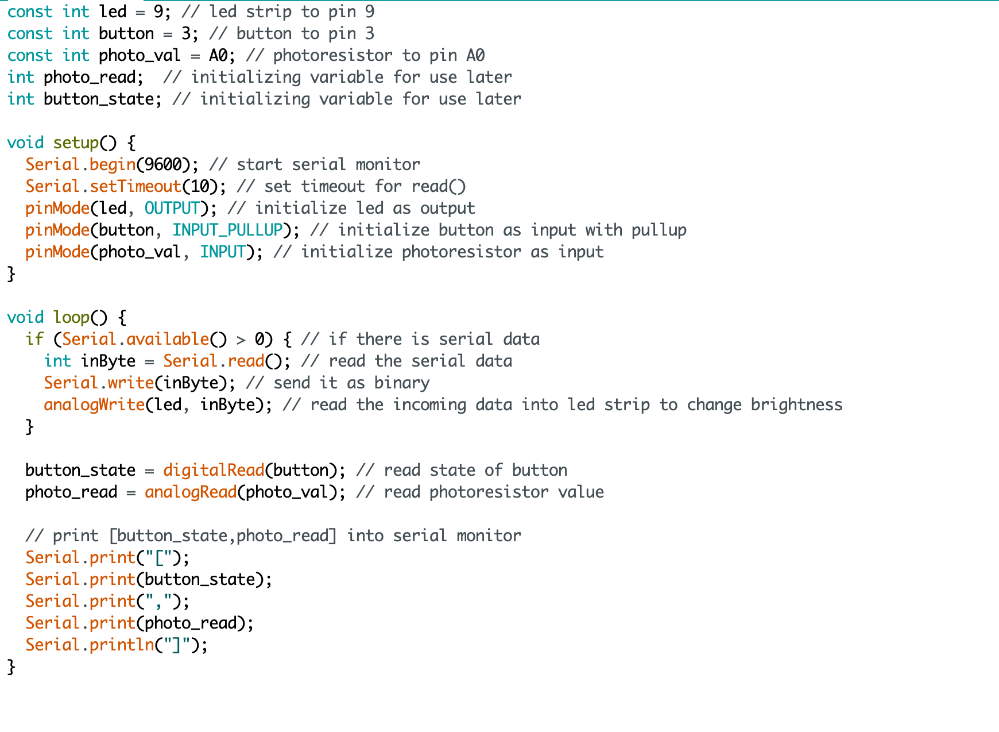

Circuit demo:

This is a gif showing how the system works. The LDR and button change the heights of the two bars on the page, and any key pressed on my laptop changes the brightness of my LED strip based off it's ASCII value.
Circuit diagram:
This is an image with details regarding how the circuit is assembled.
Here are some images of how the circuit looks assembled:
Schematic:
This is a schematic of my circuit.
Calculations:
I chose to use a 10k ohm resistor for my button, photoresistor, and LED strip because it will properly ensure the components are grounded. It is a safe choice for this circuit. Other than that, there were no other real calculations. The values were translated from the keyboard to the LED strip by determining their ASCII value.
Code Snippet:

Above is the code that is programmed into the arduino.

Above is the code that is programmed into the browser to take serial values from the arduino and display them as a graph, as well as communicate key pressed values to the arduino to change the LED brightness.